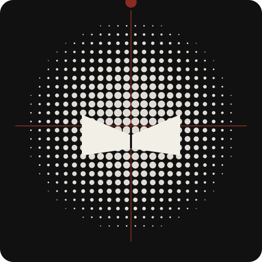

Carte
routes, cours d'eau, terres, bâtiments et lieux, dessinés à partir d'OpenStreetMap et des bases de l'IGN. Un relief en courbes de niveau, une vue en trois dimensions et un fond de parcelles culturales.

RELIQUEBibliothèque hors-ligne — France & DOM-TOM
RELIQUE réunit sur un seul ordinateur les cartes des 101 départements, les adresses, des guides rédigés en français et des encyclopédies. Elle fonctionne quand l'internet et le téléphone tombent.
Installer la bibliothèque Voir le contenu
Aucune connexion nécessaire après l'installation. Aucune donnée ne sort de l'ordinateur.
routes, cours d'eau, terres, bâtiments et lieux, dessinés à partir d'OpenStreetMap et des bases de l'IGN. Un relief en courbes de niveau, une vue en trois dimensions et un fond de parcelles culturales.
la Base Adresse Nationale, normalisée et interrogeable à la française — accents, bis et ter, communes nouvelles — avec un rappel mesuré de 100 %.
quatorze besoins traités en français : eau, assainissement, alimentation, cyclone, abri, énergie, premiers secours, communications, santé, réparation, terrain, conservation, culture. Chaque fiche décrit ce que dit la source, et dit quand appeler.
des ouvrages de référence consultables sans réseau, indexés pour la recherche plein texte, en français.
L'application propose les régions françaises, puis les départements. Le lot s'installe depuis ce site.
Chaque lot est relu par les mêmes contrôles que l'installateur : structure, index, integrity des fichiers.
Une fois installée, la bibliothèque ne demande plus rien. Aucun port réseau n'est ouvert.
Packs départementaux de 25 à 180 Mo. L'espace total dépend des départements choisis.
Les cartes et les données proviennent de sources sous licence ouverte — OpenStreetMap (ODbL), IGN, Base Adresse Nationale, RPG, Sandre — et les guides citent des documents publics français : préfectures, ORSEC, Agence nationale de sécurité sanitaire, Santé publique France, Enedis, RTE, Croix-Rouge, Service-Public.
Chaque fond de carte porte sa mention : « Source : …, date de dernière mise à jour ». Le détail figure dans la page crédits.